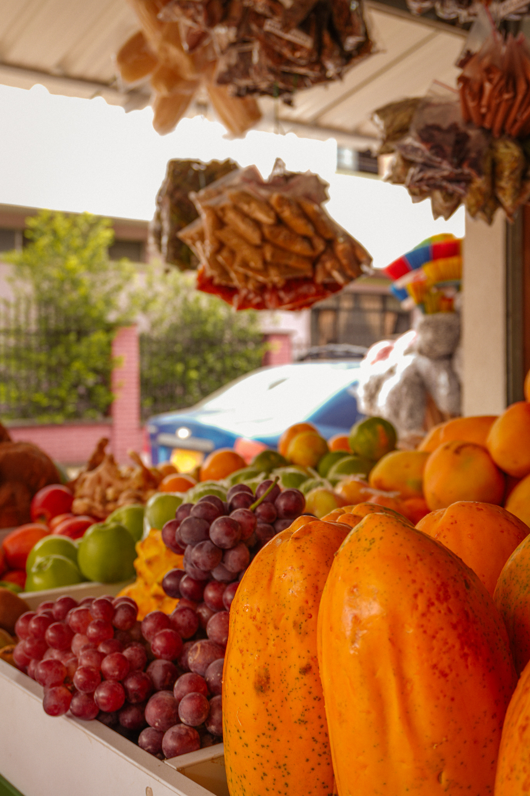
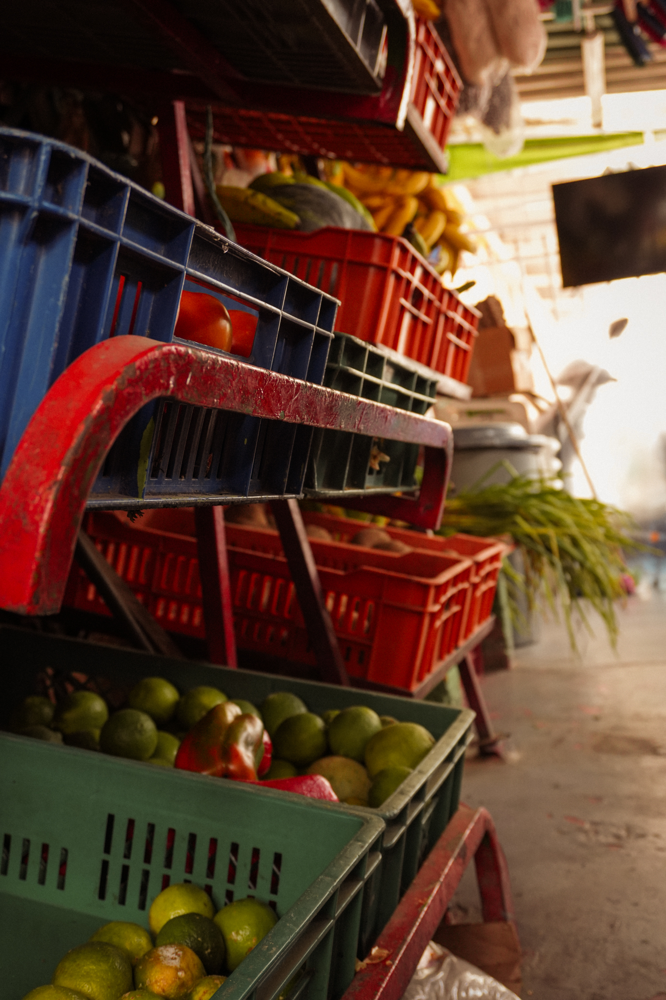
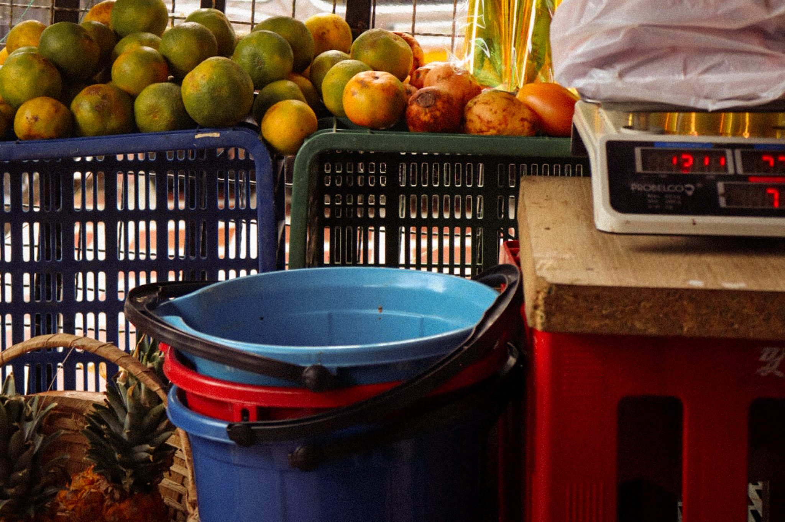
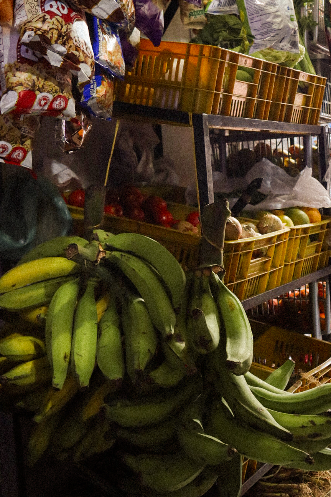
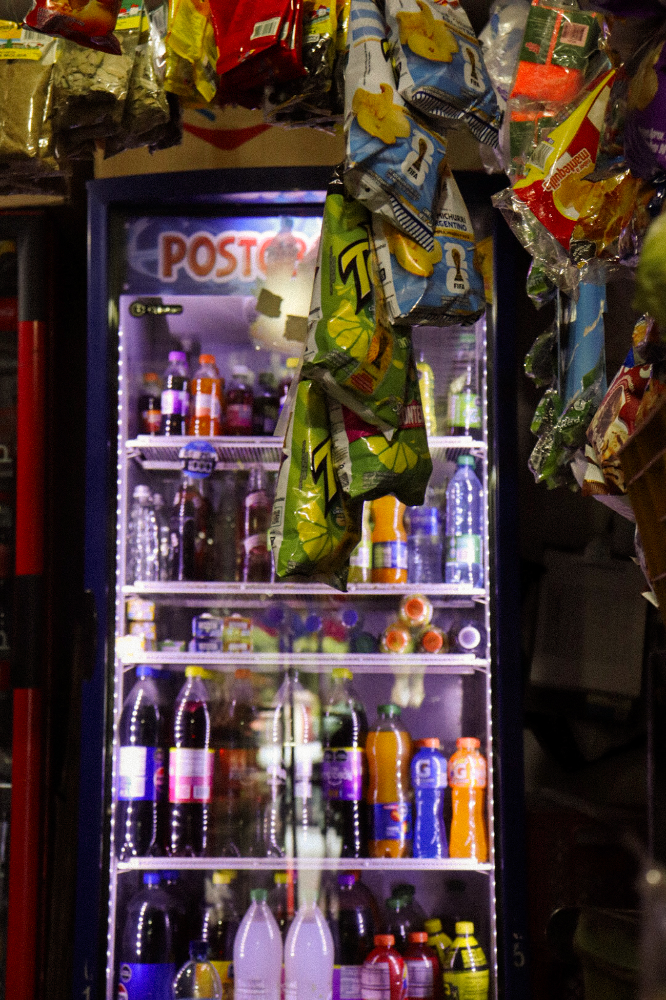
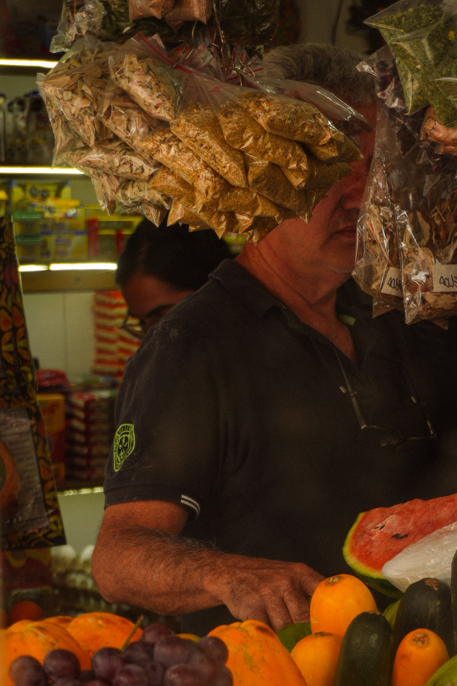
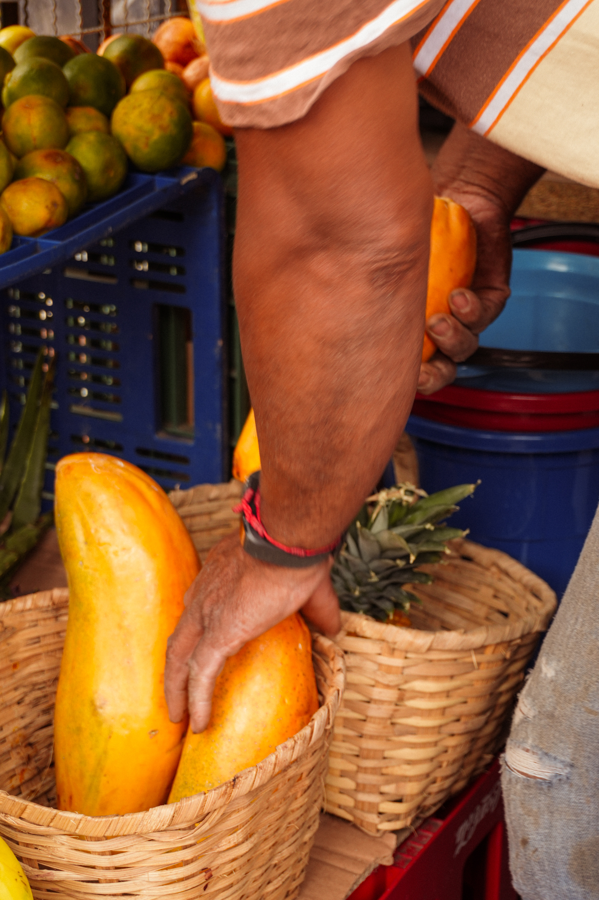
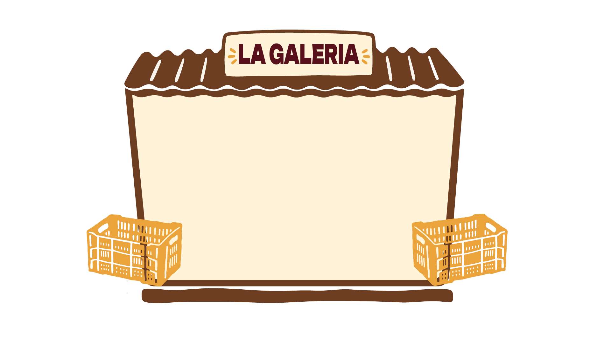

GALERÍA
Pequeñas plazas donde todavía habitan la confianza y la memoria.
Pequeñas plazas donde todavía habitan la confianza y la memoria.
Cada imagen guarda un instante de la vida en la tienda: las manos que organizan, los productos que circulan y los espacios donde el barrio todavía se encuentra.










POSTALES
Diferentes fotografías propias de las tiendas, elige tu favorita y compártela con otros
SELLOS
Conoce tu tienda, selecciona tu especialidad y compra tu propio sello